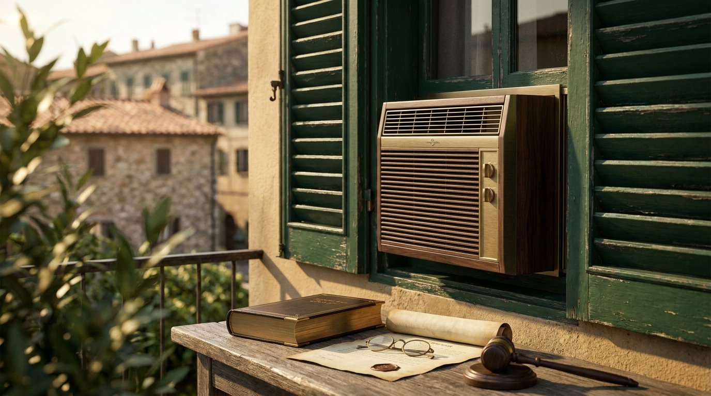

Condizionatore alla finestra: il condominio non può vietarlo
La Corte di Cassazione torna sul tema dei climatizzatori installati sulle facciate. Il principio è netto: il condomino può montare l'unità esterna su spazi di sua proprietà esclusiva senza autorizzazione assembleare, anche se l'apparecchio risulta poco gradevole alla vista. Restano però vincoli precisi a tutela della stabilità e del decoro dell'edificio. Vediamo cosa cambia in concreto.

Il principio affermato
La Corte di Cassazione ha ribadito un orientamento ormai consolidato: l'installazione di un condizionatore su parti di proprietà esclusiva del condomino, come la propria finestra o il proprio balcone, non richiede l'approvazione dell'assemblea condominiale.
Il ragionamento poggia su un dato semplice. Quando si interviene su uno spazio che appartiene in via esclusiva al singolo condomino, non si sta disponendo di un bene comune. Di conseguenza, l'assemblea non ha titolo per autorizzare o vietare l'opera. Il giudizio estetico negativo — l'apparecchio "vistoso e brutto" — non basta, da solo, a fondare un divieto.
Inquadramento normativo
Il riferimento è all'art. 1102 del Codice Civile, che disciplina l'uso della cosa comune da parte di ciascun partecipante. La norma consente al condomino di servirsi del bene comune, purché non ne alteri la destinazione e non impedisca agli altri di farne pari uso. Quando però l'intervento insiste su una parte di proprietà esclusiva, il perimetro applicativo cambia: il limite non è più l'uso paritario del bene comune, ma il rispetto delle prerogative collettive sulla facciata.
Qui entra in gioco l'art. 1122 c.c., che vieta al condomino opere — sulle parti di sua proprietà — che rechino danno alle parti comuni o ne pregiudichino la stabilità, la sicurezza o il decoro architettonico dell'edificio. È in questo spazio che si gioca la legittimità dell'installazione.
La formula "decoro architettonico" non coincide con il gusto personale o con un'idea soggettiva di bellezza. La giurisprudenza la intende come l'insieme delle linee e delle strutture che danno all'edificio una fisionomia propria. Per parlare di lesione del decoro occorre un'alterazione significativa e apprezzabile dell'aspetto complessivo, non un mero fastidio visivo.
Cosa cambia per il condomino e per l'amministratore
Per il condomino il messaggio è chiaro: l'unità esterna del climatizzatore può essere collocata sul proprio balcone o sulla propria finestra senza chiedere il consenso preventivo dell'assemblea. Non esiste un potere di veto fondato sul solo disappunto estetico degli altri condòmini.
Il diritto non è però illimitato. L'installazione resta censurabile se compromette la stabilità o la sicurezza dell'edificio, se danneggia le parti comuni — ad esempio forando in modo dannoso la facciata — oppure se altera in modo serio e oggettivo il decoro architettonico. A ciò si aggiungono i profili di vicinato: gocciolamenti, scarichi di condensa verso il basso e immissioni di rumore o aria calda oltre la normale tollerabilità possono generare responsabilità verso i confinanti.
Per l'amministratore il punto operativo è altrettanto netto. Iscrivere all'ordine del giorno un'autorizzazione su spazi privati o opporsi in via generale è spesso fonte di contenzioso inutile. L'intervento dell'amministratore ha senso solo quando emergono profili concreti di danno alle parti comuni o di lesione del decoro, da valutare caso per caso e, dove serve, con il supporto di un tecnico.
Cosa fare in concreto
- Verifica il regolamento condominiale. Se è di natura contrattuale, può contenere divieti specifici sull'installazione di impianti in facciata: in tal caso quei limiti vincolano i condòmini.
- Documenta lo stato dei luoghi prima dell'intervento. Fotografa la posizione e cura un'installazione a regola d'arte, evitando danni alle strutture comuni.
- Gestisci scarico condensa e rumore. Convoglia la condensa in modo da non interessare le proprietà altrui e controlla che il livello di rumorosità rientri nei limiti di tollerabilità.
- Amministratore: valuta caso per caso. Prima di contestare l'opera, accerta un danno concreto a stabilità, sicurezza o decoro, possibilmente con perizia.
- In caso di conflitto, privilegia la mediazione. Le controversie condominiali sono soggette a mediazione obbligatoria: tentarla prima della causa è spesso la via più efficiente.
Conclusione
La pronuncia conferma un equilibrio ragionevole: tutela la libertà del singolo di rendere vivibile la propria abitazione e, al tempo stesso, presidia gli interessi collettivi quando l'opera incide davvero su stabilità e decoro. La differenza tra installazione legittima e abuso passa per valutazioni tecniche e oggettive, non per giudizi di gusto.
Consigliamo, prima di procedere, di leggere con attenzione il regolamento e di documentare le modalità di posa: sono i due passaggi che riducono di più il rischio di contenzioso.
---
*Contributo informativo a cura di Tamburro & Partners - Avv. Giuseppe Tamburro. Non costituisce parere legale.*
Ogni condominio ha una storia a sé.
Se gestisci un'amministrazione e vuoi un confronto su una specifica questione condominiale, scrivi allo studio. Ti rispondiamo entro un giorno lavorativo.